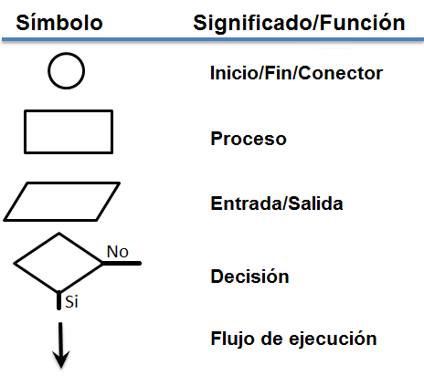

Programación 1
Unidades
Unidad 1
¿Qué es un programa?
Instrucciones de computación estructuradas y ordenadas que al ejecutarse hacen que una computadora realice una función particular
Lenguaje de Programación
Un lenguaje de programación es una técnica estándar de comunicación que permite expresar las instrucciones que han de ser ejecutadas en una computadora. Consiste en un conjunto de reglas sintácticas y semánticas que definen un programa informático
- Sintaxis estricta
- Es importante respetar las reglas sintácticas del lenguaje
Lenguaje de Programación
Su estructura y el significado de sus elementos y expresiones está formado por:
- Conjunto de símbolos.
- Reglas sintácticas.
- Reglas semánticas.
Clasificación de Lenguajes de Programación
- Primer nivel. : Lenguaje maquina
- Segundo nivel.: Lenguaje ensamblador
- Tercer nivel.: Lenguajes de alto nivel
- Cuarto nivel. : Lenguajes de cuarta generación
Licencias
Una Licencia de Software es la autorización o permiso concedida por el autor para utilizar su obra de una forma convenida habiendo marcado unos límites y derechos respecto a su uso..
Licencias
- Software privado: se refiere a cualquier programa informático en el que los usuarios tienen limitadas las posibilidades de usarlo, modificarlo o redistribuirlo
- Freeware: es un software de computadora que se distribuye sin cargo
- Shareware es una modalidad de distribución de software (juegos o programas) para que el mismo pueda ser evaluado de forma gratuita, pero generalmente por un tiempo especificado.
- Software Libre: es el aquel que, una vez obtenido, puede ser usado, copiado, estudiado, modificado y redistribuido libremente.
Licencias
¿Por qué son importantes?
- Para no infringir los derechos de autor.
- Para poder recibir soporte y actualizaciones por parte del fabricante del software.
- Para proteger nuestro trabajo.
Unidad 2
Algoritmos y programación estructurada
Algoritmos

Algoritmos
Son un conjunto de instrucciones bien definidas, ordenadas y lo más concretas posible que permiten realizar una actividad mediante pasos sucesivos a cualquier persona que siga esos pasos
Algoritmos

- Tenemos que conocer la entrada
- Para poder realizar el proceso
- Para dar a la salida el resultado
Proceso de Programación
- Antes de empezar a programar debemos tener en cuenta:
Pseudocódigo
- Herramienta que permite pasar las ideas al papel, en español y siguiendo unas pocas reglas sintácticas.
- Es una descripcion de muy alto nivel de un algoritmo
- Se usa porque es una excelente forma de transmitir lo que hace un algoritmo
- Se escribe en lenguaje humano
Pseudocódigo
Sintaxis
- Leer nombre_variable (del Usuario)
- Escribir "mensaje" (en Pantalla)
- Suma, resta, multiplicación y división
Pseudocódigo
Tipos de estructuras
- Selectivas (o condicionales)
- Si
- Si/Sino
- Bucles o repetitivas
- Mientras
Diagramas de flujo
- Es una representacion gráfica de un algoritmo
- Utiliza simbolos que representan los pasos
- Puede utilizarse en lugar del pseudocódigo
Diagramas de flujo
Simbolos
Diagramas de flujo
- Empieza y termina con Ovalos
- El flujo se marca por las flechas conectoras